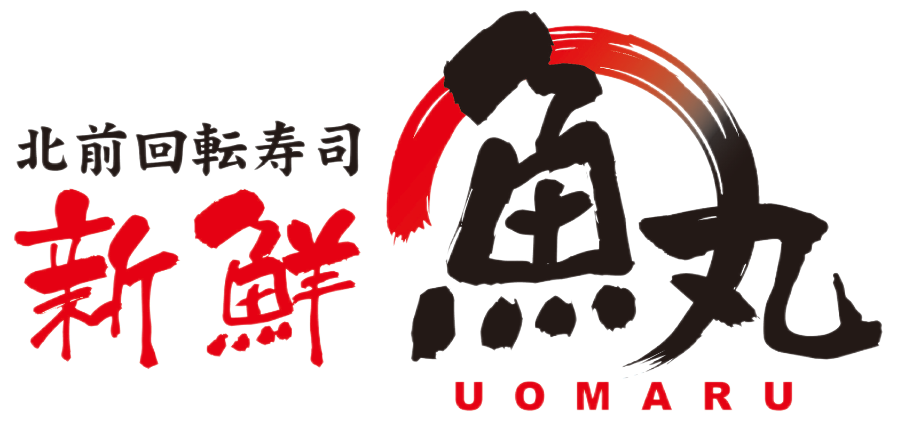

トップ
お品書き
旬のおすすめ
店舗情報
スタッフ募集
旬のおすすめ
秋のおすすめ
八角
スーパーにもあまり出回らない珍しい魚のお寿司です。八角は体に固いトゲのある魚ですがその身はとても柔らかく、北海道の旬の味です。
剣先イカ
剣先いかは身が厚くて甘みが強いのが特徴です。いかの中では高級で、旨味が濃く濃厚なトップクラスの味わいです。
特選秋さば
脂乗りの良いものだけを厳選して仕入れています。上にのっているのは“へべす”という宮崎県の特産品。ビタミンCも豊富に含まれています。へべすをかけることで爽やかになり、秋さばとの相性も抜群です。
和牛サーロイン炙り
魚のプロが作った肉のお寿司です。使っているのは A5ランクの黒毛和牛のサーロイン。柔らかさを残しながら表面を丁寧に炙っています。